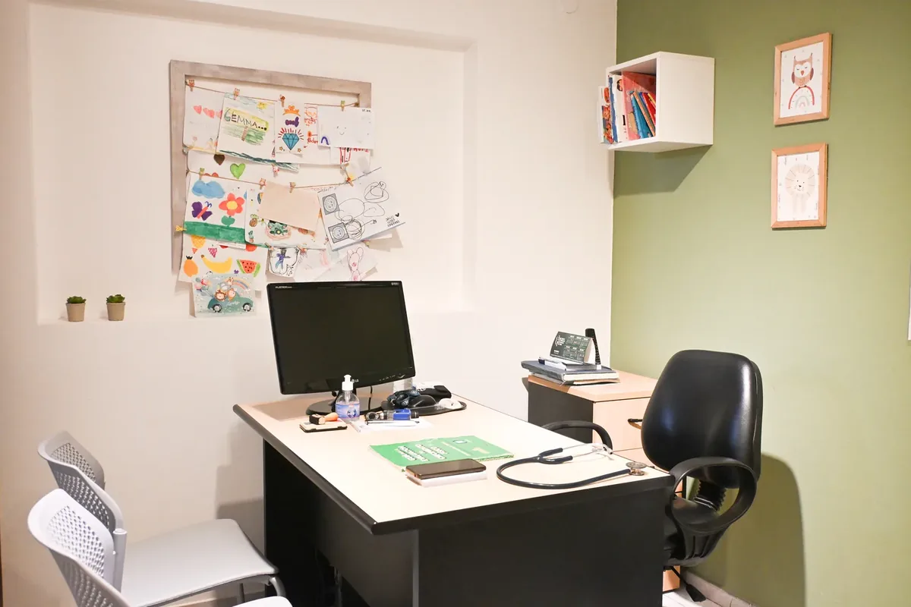
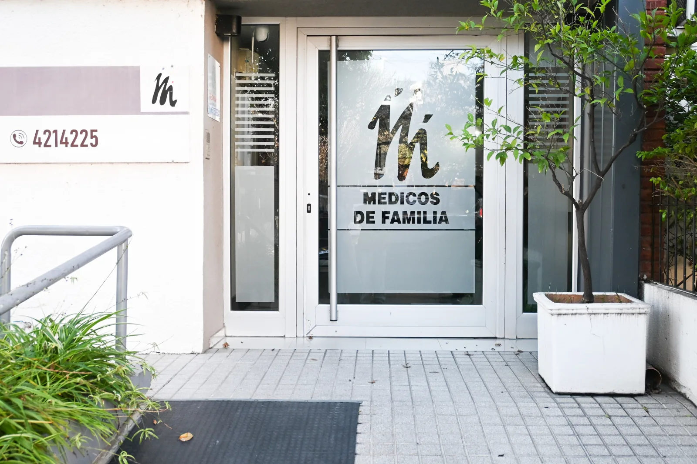

Infancias
Pediatría para controles de salud, crecimiento, desarrollo, patologías crónicas, nutrición infantil y emergentología pediátrica.
Profesionales de distintas especialidades, con una atención cercana y personalizada para vos y tu familia.
En Médicos de Familia creemos en algo simple pero fundamental: conocer a las personas que atendemos. Por eso recuperamos el valor del seguimiento personalizado y acompañamos a cada paciente y a cada familia en las distintas etapas de la vida, con una mirada integral, humana y basada en la mejor evidencia científica.
Ubicados en el centro de Córdoba, creamos un espacio donde la salud se entiende como un todo. Cada historia, cada necesidad y cada etapa de la vida merecen una mirada completa.
Esta es nuestra filosofía desde hace casi 80 años.
Nuestro camino comenzó con el Dr. José Presman, médico clínico que hizo de la cercanía con sus pacientes una forma de ejercer la medicina. Con el tiempo, nuevos integrantes de la familia y colegas de distintas disciplinas se sumaron al proyecto, compartiendo los mismos valores de compromiso, escucha y cuidado.
La esencia de nuestro espacio es la interdisciplina. Cuando una persona necesita atención desde la clínica médica, la nutrición, la psicología u otras especialidades, nuestros profesionales trabajan de manera coordinada para ofrecer respuestas integrales y acompañamiento continuo.
Estamos convencidos de que la prevención, la educación para la salud y las decisiones informadas son pilares para una vida más saludable. Por eso promovemos una medicina que acompaña antes de que aparezca la enfermedad y que pone siempre en primer lugar el bienestar de las personas.
Sabemos que el tiempo es valioso. Por eso reunimos diferentes especialidades en un mismo espacio, facilitando la coordinación de consultas y el seguimiento de cada integrante de la familia, con la atención cercana y humana que hoy más que nunca necesitamos.

Conocé el equipo del centro, filtrá por especialidad y abrí cada perfil para ver el detalle y pedir turno.
Consultas médicas, salud mental, nutrición, rehabilitación y gerontología en Córdoba Capital, con turnos coordinados por el equipo del centro.
Pediatría para controles de salud, crecimiento, desarrollo, patologías crónicas, nutrición infantil y emergentología pediátrica.
Atención interdisciplinaria para adolescentes y jóvenes, con orientación sobre las situaciones propias de esta etapa y acompañamiento a sus familias.
Atención clínica y gerontológica. Red Mayor acompaña a personas mayores y a sus familias desde un equipo interdisciplinario.
Controles generales, diagnóstico y seguimiento de adultos y adolescentes.
Endocrinología para adultos, niñas, niños y adolescentes: trastornos hormonales y seguimiento especializado.
Dermatología clínica, dermatoscopia, control de lunares, cirugía dermatológica y dermatología oncológica.
Psicología clínica, psiquiatría y psicoanálisis para adolescentes, jóvenes, adultos y personas mayores.
Tocoginecología en adolescencia, adultez y menopausia, con atención especializada en distintas etapas de la salud femenina.
Nutrición para adultos, niñas y niños: obesidad, diabetes, alimentación vegetariana, microbiota y nutrición antiinflamatoria.
Kinesiología, fisioterapia y rehabilitación postural para mejorar función, movilidad y hábitos corporales.
Para pedir turno o hacer una consulta antes de venir, podés escribir por WhatsApp o llamar al centro.
Médicos de Familia está en 27 de abril 1254, Córdoba Capital.

Escribí por WhatsApp con tu nombre y la especialidad que buscás.